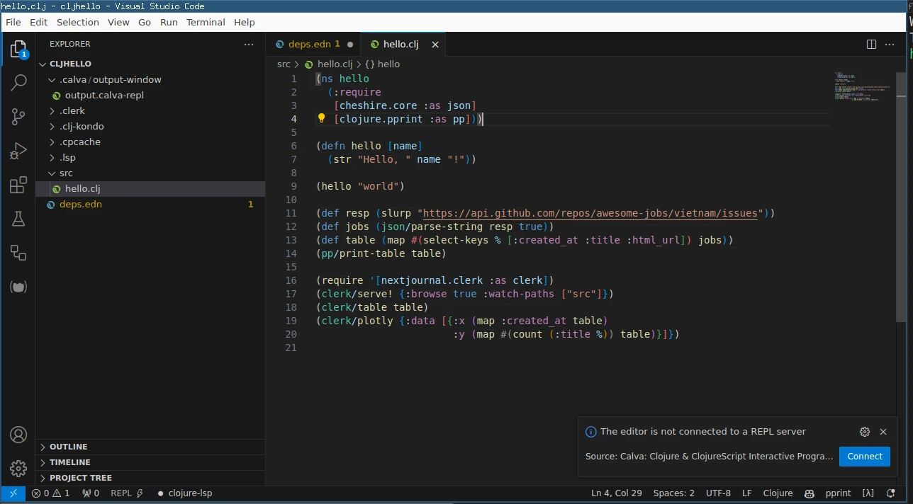
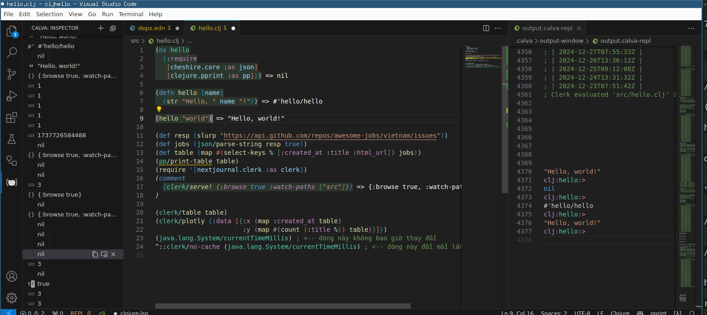
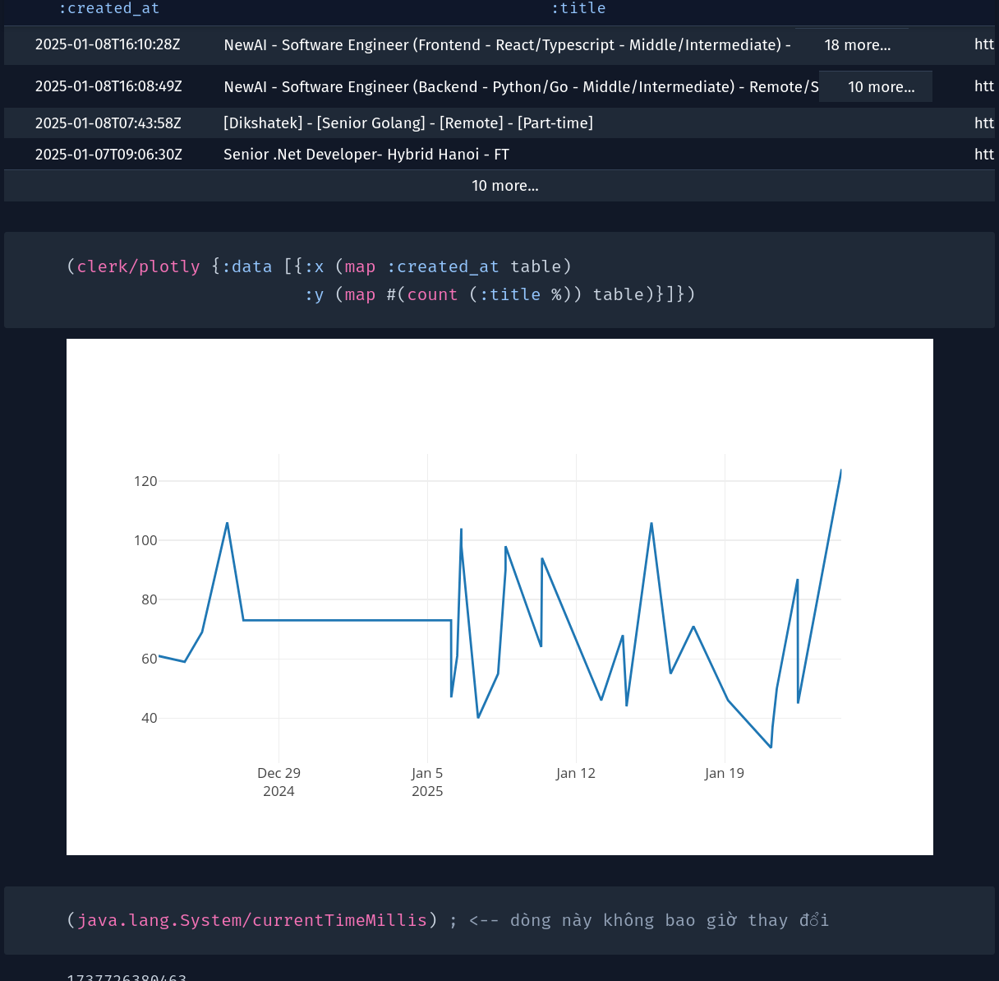

Bài hướng dẫn siêu tốc để cài đặt và code Clojure với VS Code, ngoài ra có thể vẽ đồ thị như Jupyter.
Cài đặt
Clojure
Theo hướng dẫn trên trang chủ https://clojure.org/guides/install_clojure#_posix_instructions
Test trên debian 12 bookworm:
Cài java
sudo apt update
sudo apt install -y rlwrap curl openjdk-17-jre
Cài clojure
curl -L -O https://github.com/clojure/brew-install/releases/latest/download/posix-install.sh
chmod +x posix-install.sh
sudo ./posix-install.sh
sau khi cài xong, gõ lệnh clj thấy kết quả sau là được:
$ clj --version
Clojure CLI version 1.12.0.1488
Editor VS Code
Cài VS Code https://code.visualstudio.com/ rồi cài plugin Calva.
Tạo repo
Tạo repo với file deps.edn theo hướng dẫn trang chủ https://clojure.org/guides/deps_and_cli#_writing_a_program
$ mkdir hello-world
$ cd hello-world
$ echo {} > deps.edn
$ mkdir src
Tạo file src/hello.clj:
(ns hello)
(defn hello [name]
(str "Hello, " name "!"))
(defn run [args]
(println (hello "world")))
Chạy chương trình:
clj -X hello/run
Hello, world!
Tài liệu học clojure
- Trang chủ basic https://clojure.org/guides/learn/clojure
- Clojure distilled https://yogthos.net/ClojureDistilled.html#further-reading
- Clojure from the ground up https://aphyr.com/posts/301-clojure-from-the-ground-up-welcome
Viết chương trình lấy hot job trên mạng
- Dùng http client kết nối đến API của GitHub
- Parse JSON với thư viện cheshire
- Hiển thị dạng bảng với pprint (pretty print)
- Load file code thành 1 "notebook" với Clerk và vẽ đồ thị
deps.edn
deps.edn chứa các thông tin về project, tương tự package.json trong nodejs, go.mod trong Golang, cargo.toml trong Rust, hay pyproject.toml trong Python.
Cú pháp EDN gần giống JSON, sửa file deps.edn để thêm 2 dependencies vào project này:
{:deps {cheshire {:mvn/version "5.13.0"}
io.github.nextjournal/clerk {:mvn/version "0.17.1102"}}}
đây là 1 dictionary/map chứa key ":deps" có value là 1 dictionary/map chứa 2 cặp key value là tên package - phiên bản của nó. Version tìm trên clojar cheshire và clerk.
Khi bật clj, nó tự động đọc deps.edn và tải các dependencies + load vào.
Code & chạy với REPL dùng Calva
Mở file hello.clj, sửa nội dung:
(ns hello
(:require
[cheshire.core :as json]
[clojure.pprint :as pp]))
(defn hello [name]
(str "Hello, " name "!"))
(hello "world")
(def resp (slurp "https://api.github.com/repos/awesome-jobs/vietnam/issues"))
(def jobs (json/parse-string resp true))
(def table (map #(select-keys % [:created_at :title :html_url]) jobs))
(pp/print-table table)
; output
; | :created_at | :title | :html_url |
; |----------------------+------------------------------------------------------------------------------------------------------------------------------+-----------------------------------------------------|
; | 2025-01-24T12:01:58Z | Hanoi FT - Hybrid/Remote - (Senior/Technical Lead/Manager) Fullstack Developer Python/Node.js/PHP - Up to $4000 (Negotiable) | https://github.com/awesome-jobs/vietnam/issues/4593 |
; | 2025-01-22T10:38:28Z | Remote Fulltime - Up to $4000 Gross - C# Lead | https://github.com/awesome-jobs/vietnam/issues/4592 |
(require '[nextjournal.clerk :as clerk])
(comment
(clerk/serve! {:browse true :watch-paths ["src"]})
)
(clerk/table table)
(clerk/plotly {:data [{:x (map :created_at table)
:y (map #(count (:title %)) table)}]})
(java.lang.System/currentTimeMillis) ; <-- dòng này không bao giờ thay đổi
^::clerk/no-cache (java.lang.System/currentTimeMillis) ; <-- dòng này đổi mỗi lần load lại
Đặt cursor của chuột xuống cuối dấu ) của khối code đầu tiên, gõ Ctrl Enter hoặc chuột phải chọn "Eval current form". Một cửa sổ pop-up hiện ra thông báo chứa kết nối với REPL server, bấm nút "Connect".

Chọn "Start your project with a REPL and connect (a.k.a Jack-in)" rồi chọn "deps.edn". Calva plugin trong VS Code sẽ mở 1 cửa sổ dọc bên cạnh và hiển thị "REPL".
REPL
REPL giống như "python interactive mode" có thể gõ code trực tiếp, nhưng thú vị hơn là nó "kết nối" với cửa sổ chỉnh sửa code, khiến dễ dàng chỉnh sửa và chạy code mà không cần copy qua lại giữa 2 cửa sổ. REPL là một ưu điểm rất lớn của các LISP language như Clojure, trang chủ có hẳn 1 mục riêng chi tiết về cách viết code với RÊPL https://clojure.org/guides/repl/introduction.
Lần lượt gõ enter cuối mỗi khối code để chạy nó (như trong Jupyter gõ từng cell), nếu code print, kết quả sẽ hiện bên cửa sổ chạy REPL. Nếu return, kết quả hiển thị ngay tại chỗ đặt cursor (nhưng không ghi vào file - để ghi vào file thành comment phải gõ phím khác).

Để chạy cả file, bấm Ctrl a chọn tất cả code rồi Ctrl Enter.
Xem top 10 phím tắt hay dùng của Calva tại đây https://calva.io/commands-top10/.
Clerk notebook
(clerk/serve! ... mở 1 tab trình duyệt tới địa chỉ 127.0.0.1:7777, tại đây chọn file hello.clj sẽ hiện ra "notebook". Mỗi lần lưu file, code sẽ được chạy lại và hiển thị kết quả lên trình duyệt.
Đặt cursor xuống cuối dòng này rồi ctrl Enter để chạy nó. Code này nằm trong (comment ...) nên không được chạy lúc bấm Ctrl a. Phải comment code này để khi Clerk eval cả file sẽ không mở thêm 1 server clerk khác nữa.
Chú ý mọi kết quả đều được cache lại, nên nếu dòng code không thay đổi, giá trị cũng sẽ không thay đổi kế cả restart lại chương trình.
Thêm vào trước khối code ^::clerk/no-cache để không dùng cache cho khối code đó,
hay xóa thư mục .clerk trong thư mục hello-world đi để xóa cache. Xem thêm tại https://book.clerk.vision/#cached-evaluation

PS: nếu muốn dùng Jupyter với Clojure có thể cài https://github.com/clojupyter/clojupyter.
Kết luận
Có thể code Clojure dùng VS Code, với REPL tích hợp cùng editor, không bao giờ phải gõ từng dòng hay copy/paste code, hiển thị như notebook qua Clerk,
Hết.
HVN at https://pymi.vn and https://www.familug.org.